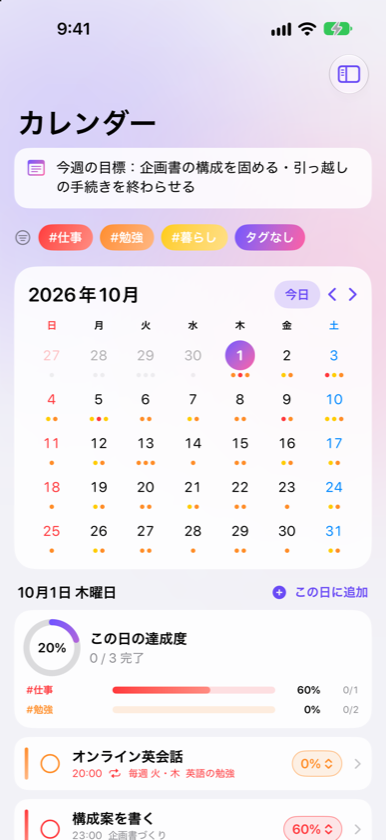
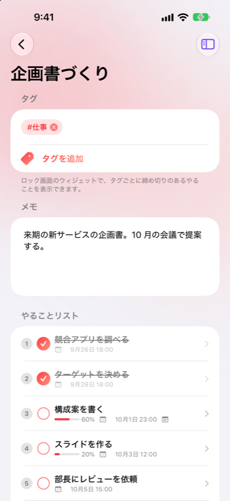
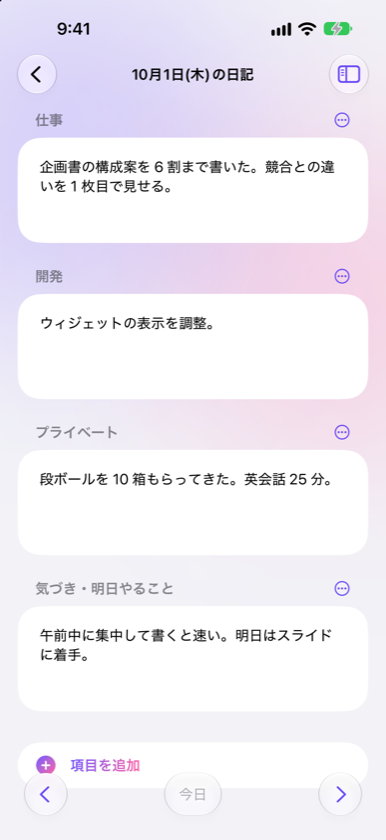
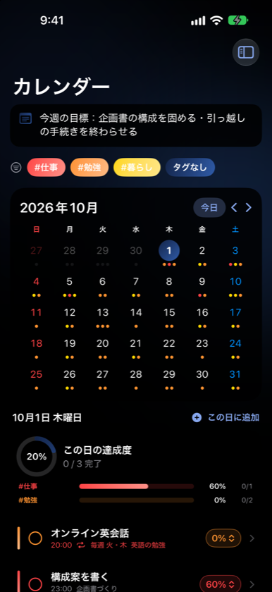

タスク
やることの締め切りと進み具合を、カレンダーとウィジェットでひと目で。その日にやったことは日記に残せます。




できること
📅 カレンダー
締め切りをタグの色の点で表示。日付を選ぶと、その日のやることと達成度が出ます。
✅ やることリスト
達成度（10% 刻み）・締め切り・メモ・繰り返し（毎日・毎週・毎月）を記録できます。
📖 日記
その日にやったことを、テンプレートの項目ごとに書けます。
🔒 ウィジェット
ロック画面・ホーム画面に締め切りや達成度を表示。チェックボックスで完了にできます。
🔄 同期
iCloud で iPhone・iPad どうし、クラウドのフォルダでパソコンの Web 版とも同期できます。
🔐 プライバシー
データは端末とご自身のクラウドだけに保存。アカウント登録も不要です。
無料版と完全版
タスク 3 つまでと、カレンダー・締め切りは無料で使えます。完全版（アプリ内課金・一度の購入・ファミリー共有対応）で、タスクの数の制限がなくなり、日記・同期・ウィジェット・ふりかえり・カラーテーマも使えるようになります。
English
A to-do app for iPhone and iPad that shows your deadlines and progress on a calendar and in widgets, with a daily diary. Available in Japanese, English, Korean and Simplified Chinese. Support · Privacy Policy